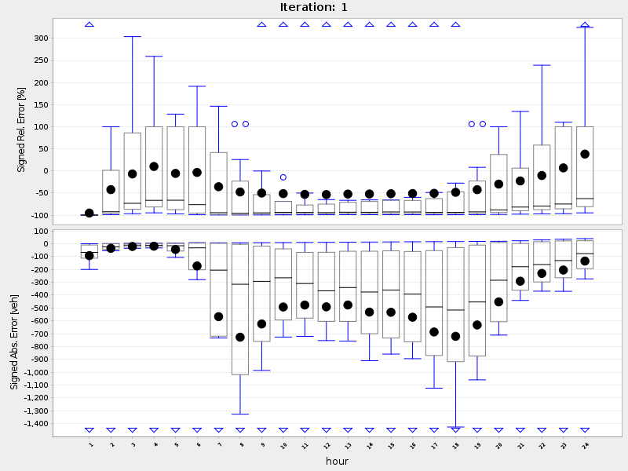

Multi-Agent Transport Simulation Toolkit
Counting Volumes
sim vs. real volumes per hour:
hour: 1
hour: 2
hour: 3
hour: 4
hour: 5
hour: 6
hour: 7
hour: 8
hour: 9
hour: 10
hour: 11
hour: 12
hour: 13
hour: 14
hour: 15
hour: 16
hour: 17
hour: 18
hour: 19
hour: 20
hour: 21
hour: 22
hour: 23
hour: 24
Error Plots:
errors
biasErrors
Load curve graph:
link100
link101
link102
link103
link104
link105
link106
link107
link108
link109
link110
link111
link112
link113
link114
link115
link116
link117
link118
link119
link120
average working day sim and count volumes:
simVsRealVolumes24Iteration1
